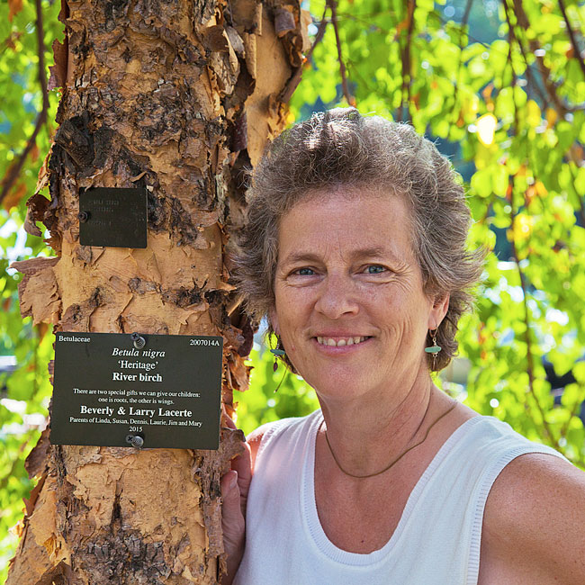
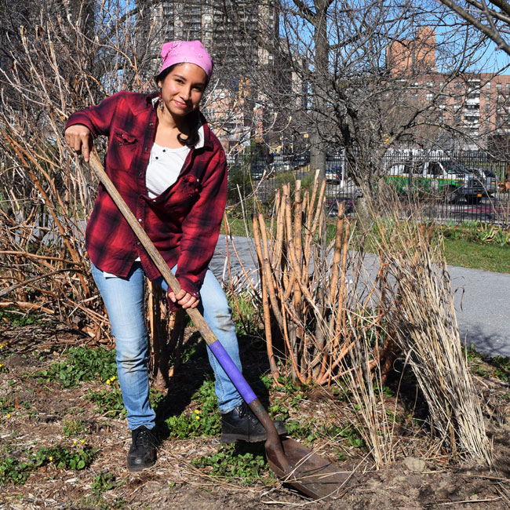
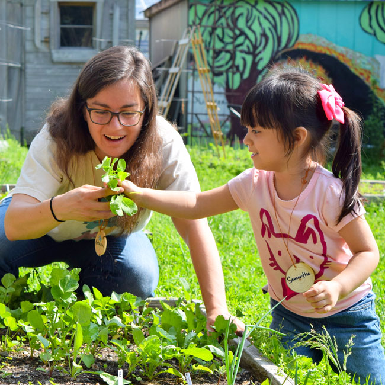
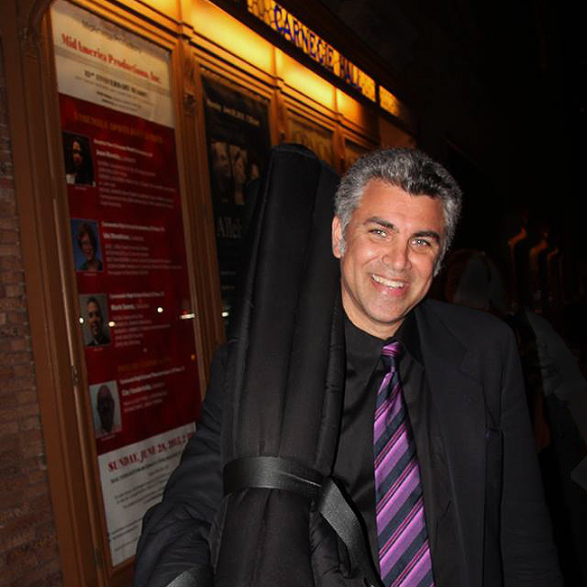
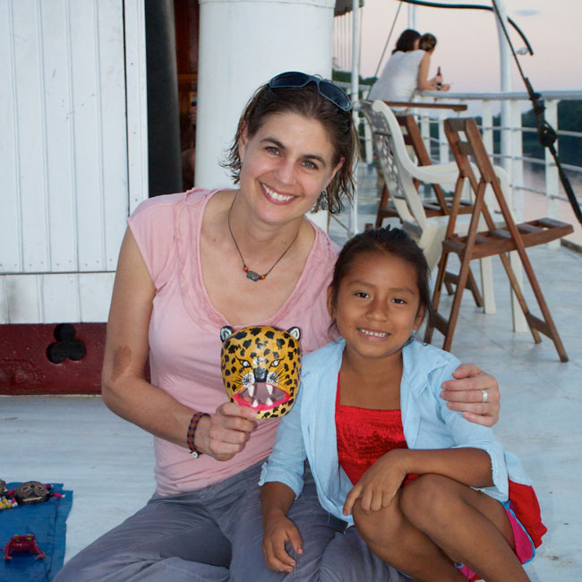

"As Director, I am always looking for ways to bring in more support to the Garden so we can do all the
wonderful things we dream up. I came to New York just after college and was struck by the diversity of this great city. I realized that part of the charm of the city was also, for me, the charm of plants—the diversity in the Plant Kingdom and how people around the world use plants, has always been fascinating to me. And this Garden which is in one of the most diverse places (Queens!) in the world—is truly the place where people, plants, and cultures meet!"
-Susan Lacerte, Executive Director, Queens Botanical Garden
"Before I volunteered at QBG I had no idea how much this Garden means for the borough of Queens, and I wish more people would appreciate its valuable presence. The Garden provides the community with open space, flowers and trees, fresh farm produce. It teaches children and adults about nature, gardening, composting, trains young adults for green jobs, and connects visitors with artists and their work. The list can go on, and yes, I am very impressed with the dedication and creativity of management and staff who tirelessly work at being of service to the people in Queens and beyond."
-Luise Schwabe, Volunteer, Queens Botanical Garden

"I love the idea of being able to look at a space and understand how I can change it to be more functional, more sustainable."
-Denise Negrillo, Seasonal Garden Assistant, Queens Botanical Garden

"One of the most exciting things about my work is hearing from parents that their child—who absolutely would NOT eat vegetables—now gobbles up the veggies that he or she grew and picked in the Children’s Garden! These kids are so engaged with the land and the produce they are growing. They go back to school with a new enthusiasm for digging and growing vegetables, and learning more about insects and birds..."
-Rebecca Wolf, Assistant Director, Queens Botanical Garden

“I settled in New York City over twenty years ago after growing up in three different continents and traveling much of the world and this country. I thrive on culture, the arts, and diversity, and now I can't imagine living anywhere else. Here, I am inspired by culture daily: in the streets, the subways, and people's apartments; from the small music clubs and art galleries to the storied institutions like the Metropolitan Opera, The Museum of Modern Art, and the Village Vanguard. To me, this is what sets New York City apart from any place in the world.”
-Saadi Zain, bassist, Manhattan
"I'm from Florida and I have lived in New York for thirteen years. I love my home state, but I moved to NYC so I could immerse myself in and add to the mosaic of various cultures that are here. I am inspired by the virtuosic teenagers dancing on the trains and by the staged dances I see in theaters. I am fed by the music I hear blaring from my neighbors' open windows in Brooklyn, and by the concertos by professional musicians. In New York I eat it all, I see it all, I hear it all--perfect for an artist!"
-Maria Bauman, Gibney Dance's 2017 Community Action Artist in Residence
"When you see yourself on the walls and your story is told,
you can't help but be inspired and want more. Access to
cultural programs fills my soul, I am grounded and have wings
at the same time. Cultural programming open doors and tell a
necessary global story.”
-Debbie Quiñones. Vice-Chair, Community Board 11
"I am constantly inspired by the notion that artists have the incredible capacity to create 'something' from 'nothing.' I revel in the concept that we can walk into an empty studio and yet magically fill the space with new ideas, pave new connections and seemingly generate more LIFE out of thin air! The really astounding thing is that this ability is not only realized by artists - this possibility is open to anyone who sees it, notices the opportunity and makes change HAPPEN!"
-Amy Miller, Gibney Dance Company Director and Associate Artistic Director
"Hailing from a small town in upstate NY, my entire perception of the world was changed when I moved to NYC ten years ago. The sites, sounds, free performances, open exhibits, public art - everything about this city inspires me. I love stumbling upon a new garden with Friday afternoon theater performances or an impromptu jazz concert on a street corner. You can feel the vibrancy of our community humming."
-Michele Wilson, Gibney Dance Director of Strategic Partnerships

"I was born and raised in Brooklyn where I have been involved in a community education program at Brooklyn Botanic Garden for over ten years; first as a student and volunteer, later as an intern, and finally as an employee. I had the opportunity to grow-up in a living museum surrounded by a multitude of flora that changes with every season and among educators that have a passion to teach youth from across the five boroughs about environmentally sustainable living practices. BBG has inspired a little boy from Brooklyn to give back to the community and to pass on the torch of knowledge to those that will come after"
-Chidi Duke. Children's Garden Interim Assistant Coordinator/Intern, Government and Community Relations

"I grew up in New York, and in its cultural organizations. I didn't know what a curator was then, but I knew that I loved cultural expression; I loved history; I loved people; I loved to be compelled and moved, by beauty or complexity or pure heart; and I loved creativity, whether in myself or others. I knew that I wanted to live my life surrounded by these things, and that I wanted to contribute to increasing their impact and frequency in the world. As a curator, this is what I get to do every day."
-Rujeko Hockley, Assistant Curator of Contemporary Art, Brooklyn Museum

"The support and perspective of LMCC, Figment and others [helped with] expanding my perspective and artistic vision, and I have been working now as a Professional Theater Director for over 15 years. As an Interactive Artist and Theater Director, I believe deeply that all people are creative and get them to play in theatrical contexts to give them an opportunity to see that in themselves. NYC arts organizations have transformed my practice and given me the chance to dream big by allowing me to increase my impact on the community of NYC. We are all here to inspire and empower each other."
-Mahayana Landowne, Artist, FIGMENT

"When I was 14, I was a summer intern at the Bronx Zoo, tending to the small animals in the Children's Zoo and caring for (and getting spit on by) the camels in their barn. Ever since then, I've wanted my work to have meaning, to give something back to the world. I feel so lucky that my career is about helping to protect the planet's amazing animals."
-Julie Kunen, Vice President, Americas, WCS
"Growing up in Spanish Harlem and the Bronx, I dreamed of living in a
museum. As I got older, the goal changed to simply working in one. After interning at The Metropolitan Museum of Art and The American Museum of Natural History while I was a student at the New York City Museum School, I was inspired to become an art history major at Baruch College (CUNY). It paid off. Today, I get to work with an eclectic collection of artifacts relating to film, television, and digital media that everyone can relate to."
-Daniel Silva, Registrar, Museum of the Moving Image